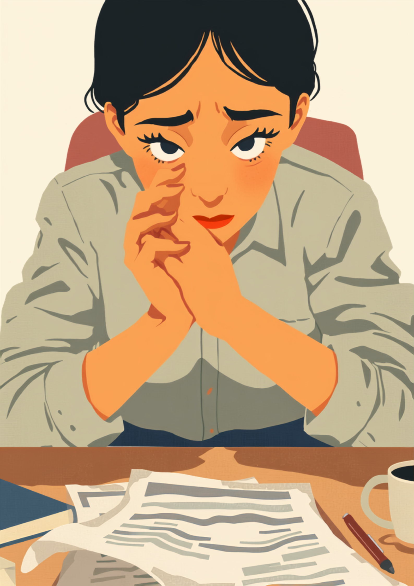
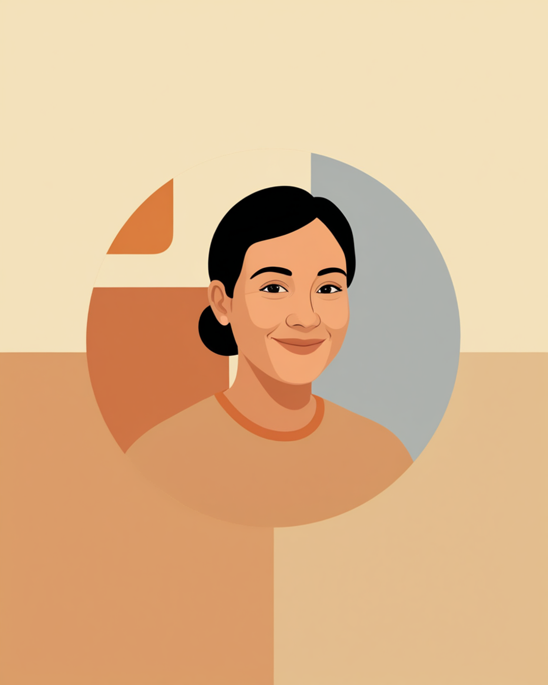

バセドウ病（甲状腺機能亢進症）は、甲状腺ホルモンが過剰に分泌されることで、動悸や手の震え、汗のかきやすさ、そして情緒の不安定さといった症状が現れることがある病気です。見た目にはほとんど変化がないぶん、体の内側で常に「せかされている」ような状態にあることが周囲に伝わりにくく、「せっかち」「怒りっぽくなった」と、性格や態度の問題として受け取られてしまうことがあります。この記事では、バセドウ病のある方が仕事の中で抱えやすい誤解のつらさと、職場への伝え方、治療との両立について当事者の声をもとに整理しました（2026年7月時点の情報です）。
PR



頭では分かっているのに、心臓だけが先に走り出しているような感覚
「せっかちで怒りっぽい人」だと誤解される、その裏側にあるもの
バセドウ病は、甲状腺ホルモンが過剰に分泌されることで、体がずっと軽く興奮しているような状態になります。動悸や震え、イライラ感は、性格ではなくホルモンバランスの影響として起こりやすいとされています。ミミ
就労支援の現場で関わってきた中で、バセドウ病のある方から何度か聞いた言葉があります。「最近せっかちになったね、って言われるんです」というものです。本人としては落ち着こうとしているのに、指先が細かく震えていたり、話すテンポが早くなっていたり、些細なことでイライラが抑えられなかったりする。それが「性格が変わった」「怒りっぽくなった」という受け取り方をされてしまうことがあるようです。
本人にとっては、心臓が常に軽く運動しているような状態が続いていて、それを表に出さないよう必死に抑えている感覚に近いといいます。それでも抑えきれない部分が、周囲には「態度」として映ってしまう。体の中で起きていることと、外から見える振る舞いとの間に、大きなずれが生まれやすい病気なのだと思います。
!
バセドウ病の症状の現れ方や程度には個人差があります。この記事で挙げる内容がそのまま当てはまるとは限らないため、体調に不安がある場合は自己判断せず内分泌内科などの主治医に相談することをお勧めします。
「診断される前、半年くらい『なんでこんなにイライラするんだろう』って自分でも分からなくて、しんどかったです。接客業だったので、お客さんに強めの口調で返してしまったことが何度かあって、上司に『最近ちょっと感じ悪いよ』って言われたときは、めちゃくちゃショックでした。バセドウ病って分かってからも、それを職場に説明するのが恥ずかしくて、結局しばらく黙ってました。」
20代・女性（バセドウ病・接客業）
相談の一コマ

相談者
会議中、貧乏ゆすりが止まらなかったり、話すテンポが早くなったりして、周りに「せかしてる」って思われてる気がするんです。自分でもコントロールできなくて。

ミミ
それはバセドウ病の症状として、珍しいことではないんです。甲状腺ホルモンの影響で、体が常に軽く興奮している状態だと、落ち着こうとしても抑えきれない部分が出てくることがあります。
相談者
性格の問題だと思われてるのが、正直一番つらいです…。
ミミ
「今、体調の関係で少し余裕がないだけです」と一言添えるだけでも、受け取られ方が変わることがあります。詳しい伝え方、次の章で一緒に見ていきましょう。
動悸・手の震え・イライラ、バセドウ病でよくある症状と仕事への影響
バセドウ病の症状は一つではなく、体のいろいろな場所に同時に現れることが多いとされています。厄介なのは、それぞれの症状が単独では「疲れているだけ」「暑がりなだけ」「せっかちなだけ」と、日常のありふれた出来事として見過ごされやすいことです。実際には、これらが同時多発的に起きているケースが少なくないようです。
i
症状の出方や強さの割合には個人差があり、同じバセドウ病という診断名でも、どの症状がどれくらい強く出るかは人によって異なるとされています。気になる症状があるときは、我慢せず主治医に相談してください。
特に動悸や手の震えは、会議中や人前で話すときに強く自覚しやすい症状です。緊張しているわけでも焦っているわけでもないのに、心臓が速く打ち、手元がわずかに震える。それを隠そうとペンを強く握ったり、資料を両手で押さえたりしながら発言している方もいるようです。
「営業職なので人と話す機会が多いんですけど、商談中に手が震えてるのに気づかれるのが怖くて、いつも資料をぎゅっと持つようにしてました。正直言うと、3ヶ月くらいそれで誤魔化し続けてたんですけど、ある日取引先の方に『緊張してます？』って優しく聞かれて、逆にそこで初めて『実は持病があって』って言えたんです。言ってみたら意外とあっさり流してもらえて、なんで自分だけであんなに抱え込んでたんだろうって、ちょっと拍子抜けしました。」
40代・男性（甲状腺機能亢進症・IT営業職）
職場にどう伝える、「気にしすぎ」と言われないための伝え方
バセドウ病のつらさは、症状そのものだけでなく、それが性格の問題として受け取られてしまうことにもあります。「イライラしないで」「落ち着いて」と言われても、本人としては落ち着こうとしてもできない状態にあるため、そう言われること自体がさらに負担になってしまうことがあるようです。
症状の全部より、今の状態だけを伝える
病気のメカニズムをすべて説明する必要はないとされています。今、体にどんな変化が起きていて、それが仕事にどう関わるかという、限定的な情報を伝える方法が、双方にとって負担が少ないといわれています。
- 「今、体調の関係で少し余裕がないだけです、気にしないでください」
- 「手が震えることがありますが、体調によるもので緊張ではありません」
- 「動悸が強いときは、少し席を外させてもらえると助かります」
- 「治療中で、通院日は事前にお伝えします」
「性格ではなく体調」だと一言伝えておくだけで、周りの受け取り方が変わることがあります。言い訳のように感じるかもしれませんが、これはお互いの誤解を防ぐための準備だと考えてみてください。ミミ
とはいえ、詳しく話しすぎるとかえって腫れ物扱いされてしまう、という声もあります。信頼できる上司や人事担当者にまず伝え、そこから業務に関わる範囲だけをチームに共有してもらう、という進め方をとっている方も少なくないようです。
治療と仕事の両立、使える制度と相談先
治療にかかる期間の目安
バセドウ病の治療は、多くの場合まず抗甲状腺薬による内服治療から始まるとされています。ホルモンの数値が落ち着くまでにかかる期間には個人差があり、数ヶ月で安定する方もいれば、より長く治療を続ける方もいるといわれています。焦らず、主治医と相談しながら経過を見ていくことが大切だとされています（2026年7月時点の情報です）。
バセドウ病そのものは身体障害者手帳の対象になりにくいとされていますが、症状の程度や合併症の有無によって状況は個人ごとに異なります。判断は自己流で進めず、主治医や自治体の障害福祉窓口によく確認しながら進めることをお勧めします（2026年7月時点の情報です）。
相談できる窓口
- 内分泌内科の主治医（症状の記録や、働き方についての意見書の相談）
- 職場に選任されている産業医（50人以上の事業場に選任義務あり）
- 症状が重く一時的に働けない場合の傷病手当金の相談窓口（加入している健康保険組合など）
- 就労移行支援事業所（体調管理を含めた就労準備や職場との調整）
体の中で起きていることは、周りには見えません。それでも「性格ではなく体調です」と一言伝えることは、決して大袈裟なことでも甘えでもないはずです。
よくある質問
Q. バセドウ病でも障害者手帳は取れますか？
バセドウ病そのものは身体障害者手帳の対象になりにくいとされていますが、眼球突出などの合併症で視機能に大きな影響が出ている場合や、症状が重く生活に著しい支障がある場合は、該当する区分がないか自治体の窓口に確認してみる価値はあります。個々の状況によって判断が異なるため、詳しくは主治医や自治体の障害福祉窓口にご確認ください（2026年7月時点の情報です）。
Q. 職場に「イライラしているように見える」と誤解されたときはどう伝えればいいですか？
性格の問題ではなく体の状態が影響していることを、まず一言添えるだけでも受け取られ方が変わることがあるとされています。「今、体調の関係で少し余裕がないだけです」など、短い言葉で構わないので伝えておく方法が助けになる場合があります。
Q. 抗甲状腺薬の治療と仕事は両立できますか？
治療内容や通院頻度は人によって異なりますが、服薬しながら働き続けている方は少なくないようです。通院日をあらかじめ共有し、体調に波がある時期は業務量を調整してもらいながら両立している例もあります。産業医や人事担当者に早めに相談しておくと安心です。
Q. 症状が落ち着くまでどのくらいかかりますか？
治療への反応には個人差があり、数ヶ月で落ち着く方もいれば、より長い期間治療を続ける方もいるとされています。焦らず主治医と相談しながら経過を見ていくことが大切だとされていますので、自己判断で服薬を調整せず、疑問があれば診察の際に確認することをお勧めします。
Q. 「気にしすぎ」「大袈裟」と言われてつらいときはどうすればいいですか？
体の内側で起きている変化は周囲から見えにくいため、悪気なくそう言われてしまうことがあります。一人で抱え込まず、就労移行支援機関や産業医など、症状の背景を理解した第三者に相談することで、伝え方を一緒に整理できる場合があります。
この5点を頭に置いておくだけで、少し気持ちが軽くなるかもしれません
PR


一人で抱え込む前に、今の気持ちを話してみませんか
「まだ迷っている」段階でも大丈夫です。mimemimeの無料相談は、今の状況の整理から一緒に始められます。
無料で話してみる
おのざる
mimemime代表。就労支援の現場経験をもとに、障がいのある方の働く不安に寄り添う記事を執筆。